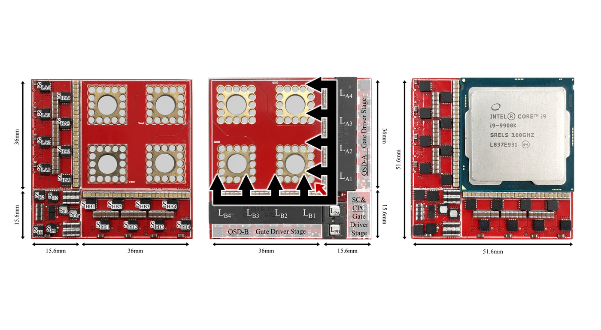

01
High-ratio conversion to the processor
Challenge
Stepping the distribution voltage down to the processor core voltage in one stage loses efficiency, and distribution voltages keep changing.
Approach
Compact, stackable point-of-load modules built on hybrid switched-capacitor converters that share the work between capacitors and small inductors.